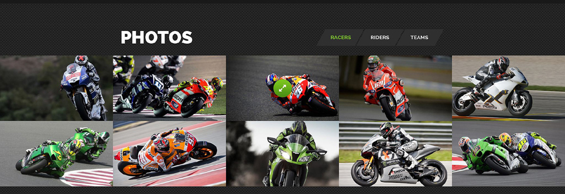
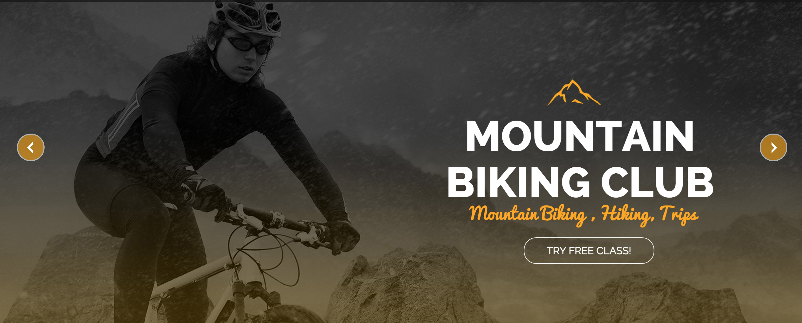

When looking deep inside for what drives me, I find that design and art are what inspires many. I am not your everyday artist with pen and paper in hand, but one who looks to learn as much of the digital design and art concepts as possible. This is a new beginning for me. It is a road less travel or never thought of. I look to be amongst those who are not only good at what they do, but to be one who loves, enjoys, and inspires with the creation of my designs and art. It is a lesson to be learned. I am a future web developer and designer, and just the future of the web.
A designer has many talents. These talents come from deep within. We are a network of inspiration among ourselves. We find inspiration in many things and see art where others may not. I am compiling my on component library for future projects that come from those that have inspired me. These elements will help in my development and strategy to help me produce inspiring future works.
Component Library
Detailed Header
Target Audience
This site was designed to advertise for a web development company. It is designed to reach a more professional audience. It will appear useful to those who are in a business structure looking to use the web services offered.
Client/User Needs
It is a company that gives a brand its meaning and purpose for their audience. It gives the client a fair idea that it offers the needs to help in any company goals of advertising, sales and etc. It offers a development approach that gets positive feedback for the client. The users’ needs are definitely met through a true and trusted methodology the company offers. It meets or exceed expectations set forth for most users.
Design Critique
This site has a great appeal. Its colors offer the appearance of a company who is sure of it. The blues say this is a calming, dependable company to deal with. Its orange colors say that it is a fun and friendly company. The reds finally say that it may be an energetic, powerful, and exciting sense of being. The setup and all gives the company appearance of design that says they know what they’re doing.
Blog
Target Audience
Here is a blog to love. It is geared more towards a professional clientele. It sticks out that way. The audience is probably in the mid to late 30s plus. They are well established in itself. It appears to offer many different elements that lean towards an audience who keeps up with professional happenings and items of interest.
Client/User Needs
This will appeal to anyone of the professional clients in many ways. It will give dates of post, professional icon sets of persons, and comments. This will save time and follow up for many. The need of the user is definitely given by this display of the company blogs. It is seen with a possible ease of use for the given setup. It may even exceed the standard for most.
Design Critique
I can see the company stands for energizing engagement. The blues bring out this observation as well as a vibrant appeal. The typography is seen here to be set in a way to catch the users’ eye. The sans serif fonts are used to give the user a better reading experience. That is even with low resolutions. Each post heading is set in this blue backdrop to separate the head from the post. As we continue to observe, we notice the note to read more is set with arrows to give attention to a possible forward/backward potential. These elements are again, given the difference of color to catch attention.
About/Team
Target Audience
This particular component is geared more towards those who are in the construction field. The audience could be someone in the mid to late 20s and upwards in age. It would appeal to someone looking to use a construction company to do some work for them as well. The actual audience could be male or female now a days.
Client/User Needs
Here we see that the company offers the opportunity to meet and contact the team. It gives the client the chance to become informed so their decisions for using the said company would justify. It would save the client financially in the long run possibly. They will also be able to connect throughout any project they do. The user can feel comfortable to know they help is at their fingertips. The current element features an easy to use setup. The user would be able to inquire if necessary about a particular job function needed.
Design Critique
This element gives off a plain and simple appeal. Its yellow to tan background offers a feeling of cheerfulness, soft and warmness. The typography gives way to be read easily. The boxes are setup accordingly by using the rules of thirds. You have the blues showing a sense of dependability. There are so arrows used to signal a possible scroll effect that takes one through a list of team members.
Contact
Target Audience
This element can have a varied use for an audience. It would range from about 18 and up. It would be either male or female. The audience is simply giving a chance here to have many different ways to contact a particular company.
Client/User Needs
This element offers a great benefit to both client and user alike. It will give both the ability to connect with the company in several different ways. It will solve the need for any extras such as phone books or any other look up method. There is even a newsletter signup area to keep both the user and client up to date with all the need to know. The contact ability needs are met.
Design Critique
This is a great design. I would say that the colors could have been a bit different but considering the sites overall color usage, it fits perfect. The black offers a very bold appeal. The grays and whites give the site more readability. They use the sans serif font to give it a great typography with readability. The site offers a wide choice of contact information, which is great.
Login/Registration
Target Audience
The target audience for this particular element would be someone in their mid to late 40s and beyond. The person could be male or female. It has to possibly be someone who has progressed in life and career. I would say that the audience would be someone who loves to travel.
Client/User Needs
This is a great company advertisement. It appears to have the ability to meet the needs of the client. It has secure feature for the client. It gives them the ability to login and/or register for a trip. The client could sign up and never have to lose when, where, or what they would like to do. The user would find this to be a very user friendly element to use.
Design Critique
The site is set up to catch the eye of the user for its intended purpose. It is a luxury travel site. It was designed to be an attention getter. It is displayed well with all the earth tones and all the typography usage. They use the eye-catching sans serif font. It has login and reserve sections for ease of use and access to site specials. The earth tones give the real life effects in its use. The yellows give a soft, happy or warm feel. The blues gives an energetic, dependable feel to the site. The whites offer a more peaceful appeal.
Footer
Target Audience
The audience for this particular element is around the age of 21 and above. This tool offers the user directions for a shipment and/or just to find a company whereabouts. The intended user could find with ease anywhere needed. It would require that one is versed in the maps use.
Client/User Needs
Here we see the need of the client is met when the client intends to find a location. The element has several other feature sets that will take you to different other elements of the site. The user will be able to use the site with ease as well. It offers connection ability too. The user will be able to connect with using the simple social media icon set.
Design Critique
The site offers a simplistic beautiful element. It uses the sans serif fonts like most to give the site the ability to be read easily. The element uses the different shades of green to give the site a feel of being trustworthy, refreshing, and neutral. It adds some yellow in there to give it the feel of enlightenment and energy. There are some elements within such as the mapping symbol and the mail symbol. They both offer implied meanings.
Image Gallery

Target Audience
The target audience in this particular element is someone who is a motorcycle enthusiast. The age range is somewhere around early 30s and up. The audience is more likely male. The audience is also more on the mature side. The audience loves to ride.
Client/User Needs
The client sees this as an opportunity to invest and/or learn more about the rider and racer. It gives the idea and information on the different bikes available. It meets the goals of the client by giving more of a description and image of specific bikes. The user will find this to be informative. It will give access to user desired information as well.
Design Critique
This site element is designed in a way that gives a simplistic look. The typography is different. I am not sure which font it is, but it matches the site concepts and intended use. The type appears to be a way to show speed or something. The colors are many different ones that give the element the feel of boldness, liveliness, fresh, and fun.
Carousel

Target Audience
This component has an intended audience who loves riding mountain bikes. The audience is from the mid 20s to 50 years old. The audience is both male and female. The audience is also a person into fitness.
Client/User Needs
The site offers some insight into mountain bike riding. The client would be able to find good areas to ride. It will give stories that are beneficial to beginning bike riders. It is definitely set up to give the user a great experience as well. The user will be able to gather more information as he/she can.
Design Critique
This site has some beautiful color coordination. It has some nice typography as well. It doesn’t use the sans serif font. It is a font that suites this site well and it is readable. The sites orange gives the site the appeal of fun and energizing. The black gives it a bold feel. The white font offers a peaceful appeal. The elements go great together.
Modal
Target Audience
The target audience is of a more mature nature. It is used by a female and/or a male. The audience age ranges from mid 30s and up. It stops the intended user from moving forward throughout a process.
Client/User Needs
The element allows for some control of elements by the client that may be needed within the clients’ site. It is designed and made to be the control factor the client may need dictated. The user will be able to know when a particular function isn’t complete. It will stop the user in their tracks. It is user friendly.
Design Critique
This element is an element of surprise sometimes. It is a very useful element. The design offers a lively, spring feeling. It’s green gives way to this. The way the element is brought up over a low opacity backdrop, gives the element a sense of prominent being. The element is not just there for the liking always. It stops a process that is incomplete. It uses the sans serif font for easy to read elements.
CTA
Target Audience
The element targets a wide variety audience. It is intended to gather information to get a client to join up to receive a specific. The age of the intended audience is from about the mid 20s and above.
Client/User Needs
This component meets or exceeds the client and users’ needs. It is placed in a way to get direct attention quick. It calls both user and client to perform a function. It is simplistic in design.
Design Critique
This element is simplistic in design. It doesn’t have all the fancy colors and/or elements. It is in white in which offers a feeling of peace. It does have a red colored button that gives a feeling of excitement. The sans serif font is used. It gives an easy to read element. It is easy to catch attention with this element.